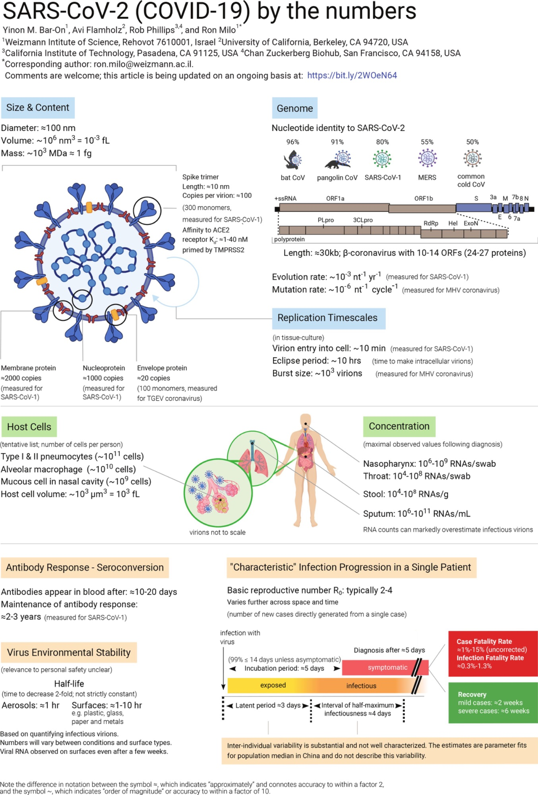

| Unidad | En SI | Notación Científica | Contexto SARS-CoV-2 |
|---|---|---|---|
| 1 nm | 10⁻⁹ m | 1×10⁻⁹ m | 10× menor que el spike (10 nm) |
| 1 µm | 10⁻⁶ m | 1×10⁻⁶ m | 10× mayor que el virus (100 nm) |
| 1 mm | 10⁻³ m | 1×10⁻³ m | 10,000× mayor que el virus |
| 1 fL | 10⁻¹⁵ L | 1×10⁻¹⁵ L | 1000× el volumen del virión (10⁻³ fL) |
| 1 MDa | ≈1.66×10⁻¹⁸ g | 1.66×10⁻¹⁸ g | Un millón de Daltons |
| 1 fg | 10⁻¹⁵ g | 1×10⁻¹⁵ g | Igual a la masa del virión |
| 30 kb | 3×10⁴ nt | 3×10⁴ nt | Tamaño del genoma viral |
🦠 Los números del SARS-CoV-2
Notación científica, magnitudes y conversión de unidades aplicadas a la microbiología
1 Introducción: ¿Por qué necesitamos la notación científica en microbiología?
Imagina que intentas describir el diámetro del virus SARS-CoV-2 escribiendo todos sus ceros:
\[0.000{,}000{,}100 \text{ metros}\]
¡Eso es difícil de leer, difícil de comparar y muy fácil de equivocarse! Por eso los científicos usamos la notación científica, que nos permite expresar números muy grandes o muy pequeños de forma compacta y clara.
📌 Recuerda
La notación científica escribe cualquier número en la forma:
\[a \times 10^n\]
donde \(1 \leq a < 10\) y \(n\) es un número entero (positivo o negativo).
En esta guía usaremos datos reales del SARS-CoV-2 (el virus que causa el COVID-19) para practicar estas habilidades matemáticas.
2 La infografía científica como fuente de datos
El siguiente diagrama fue publicado por investigadores del Instituto Weizmann de Ciencias (Israel) y el Caltech. Contiene docenas de valores numéricos reales sobre el SARS-CoV-2.

🔍 Observa la imagen
Tómate 2 minutos para explorar la infografía. Fíjate en cuántos números aparecen y en qué unidades están expresados. Verás: nm, nm³, fL, MDa, fg, kb, entre otros.
3 Unidades de medida en microbiología
Antes de trabajar con los números del virus, necesitamos conocer las unidades que usan los microbiólogos.
3.1 El Sistema Internacional y los prefijos
Todo parte del metro (m) para longitud, el gramo (g) para masa y el litro (L) para volumen.
| Prefijo | Símbolo | Factor | Notación científica | Ejemplo biológico |
|---|---|---|---|---|
| Mega | M | 1,000,000 | \(10^6\) | Tamaño del genoma humano (~3,000 Mb) |
| Kilo | k | 1,000 | \(10^3\) | Longitud de un cromosoma bacteriano |
| — | — | 1 | \(10^0\) | 1 metro |
| Mili | m | 0.001 | \(10^{-3}\) | Grosor de un cabello humano (~70 µm) |
| Micro | µ | 0.000001 | \(10^{-6}\) | Diámetro de una bacteria (~1–10 µm) |
| Nano | n | 0.000000001 | \(10^{-9}\) | Diámetro de un virus (~100 nm) |
| Femto | f | \(10^{-15}\) | \(10^{-15}\) | Volumen de una bacteria (~1 fL) |
3.2 Unidades especiales en biología molecular
| Unidad | Símbolo | Equivalencia | Se usa para |
|---|---|---|---|
| Dalton | Da | masa de 1 átomo de hidrógeno ≈ \(1.66 \times 10^{-24}\) g | masa de moléculas |
| Megadalton | MDa | \(10^6\) Da | masa de virus, proteínas grandes |
| Kilobases | kb | \(10^3\) pares de bases de ADN/ARN | tamaño del genoma |
| Femtolitro | fL | \(10^{-15}\) L | volumen de células y virus |
4 Notación científica: teoría y ejemplos resueltos
4.1 Conversión de número decimal a notación científica
Regla: Mueve el punto decimal hasta que quede un solo dígito antes del punto. El exponente de 10 indica cuántos lugares y en qué dirección moviéste el punto.
- Si el número original es mayor que 10 → el exponente es positivo
- Si el número original es menor que 1 → el exponente es negativo
4.2 Ejemplo resuelto 1: Diámetro del SARS-CoV-2
De la infografía: el diámetro del SARS-CoV-2 es ≈100 nm.
Convirtamos 100 nm a metros:
Paso 1: Convertir nm a metros. Sabemos que \(1 \text{ nm} = 10^{-9} \text{ m}\)
\[100 \text{ nm} = 100 \times 10^{-9} \text{ m}\]
Paso 2: Escribir en notación científica correcta (un solo dígito antes del punto):
\[100 \times 10^{-9} = 1.00 \times 10^{2} \times 10^{-9} = 1.00 \times 10^{-7} \text{ m}\]
✅ Resultado
\[\text{Diámetro del SARS-CoV-2} = 1.00 \times 10^{-7} \text{ m}\]
Es decir, una décima millonésima de metro. Para ponerlo en perspectiva: ¡caben 1,000 viriones SARS-CoV-2 en el diámetro de un cabello humano (~100 µm)!
4.3 Ejemplo resuelto 2: Masa del virión
De la infografía: masa ≈ \(10^3\) MDa ≈ 1 fg
Vamos a convertir 1 fg (femtogramo) a gramos:
Paso 1: Recordar que \(1 \text{ fg} = 10^{-15} \text{ g}\)
\[1 \text{ fg} = 1 \times 10^{-15} \text{ g}\]
Paso 2: Verificar con la masa en Daltons. \(10^3 \text{ MDa} = 10^3 \times 10^6 \text{ Da} = 10^9 \text{ Da}\)
Convertir \(10^9\) Da a gramos (1 Da ≈ \(1.66 \times 10^{-24}\) g):
\[10^9 \times 1.66 \times 10^{-24} \text{ g} = 1.66 \times 10^{-15} \text{ g} \approx 1 \text{ fg}\]
✅ Resultado
¡Ambas rutas nos dan el mismo resultado! La masa del virión ≈ \(10^{-15}\) g = 1 fg. Esto confirma la consistencia de los datos de la infografía.
4.4 Ejemplo resuelto 3: Volumen del virión
De la infografía: volumen ≈ \(10^6\) nm³ = \(10^{-3}\) fL
¿Cómo se relacionan nm³ y fL?
Paso 1: Expresar el volumen en litros. \(1 \text{ nm} = 10^{-9} \text{ m}\), entonces \(1 \text{ nm}^3 = (10^{-9})^3 \text{ m}^3 = 10^{-27} \text{ m}^3\)
Paso 2: Convertir m³ a litros (1 m³ = 1000 L = \(10^3\) L):
\[1 \text{ nm}^3 = 10^{-27} \text{ m}^3 \times 10^3 \frac{\text{L}}{\text{m}^3} = 10^{-24} \text{ L}\]
Paso 3: Calcular el volumen total del virión:
\[10^6 \text{ nm}^3 \times 10^{-24} \frac{\text{L}}{\text{nm}^3} = 10^{-18} \text{ L}\]
Paso 4: Convertir a femtolitros (\(1 \text{ fL} = 10^{-15}\) L):
\[10^{-18} \text{ L} \div 10^{-15} \frac{\text{L}}{\text{fL}} = 10^{-3} \text{ fL}\]
✅ Resultado
\[\text{Volumen} = 10^6 \text{ nm}^3 = 10^{-3} \text{ fL}\]
Esto concuerda perfectamente con lo que dice la infografía. 🎯
5 Comparación de magnitudes y órdenes de magnitud
5.1 ¿Qué es un orden de magnitud?
📐 Definición
Un orden de magnitud es un factor de 10. Cuando decimos que A es “dos órdenes de magnitud mayor que B”, significa que \(A = 100 \times B\).
Formalmente: si \(A = 10^n\) y \(B = 10^m\), la diferencia de órdenes de magnitud es \(n - m\).
5.2 Escala de tamaños biológicos
| Objeto | Tamaño típico | Notación científica (m) | Órdenes vs. virus |
|---|---|---|---|
| Molécula de agua | 0.3 nm | \(3 \times 10^{-10}\) m | -1 |
| Proteína (spike) | ~10 nm | \(10^{-8}\) m | 0 (referencia virus) |
| Virus SARS-CoV-2 | ~100 nm | \(\mathbf{10^{-7}}\) m | 0 |
| Bacteria (E. coli) | ~2 µm | \(2 \times 10^{-6}\) m | +1 |
| Glóbulo rojo | ~8 µm | \(8 \times 10^{-6}\) m | +2 |
| Célula epitelial | ~50 µm | \(5 \times 10^{-5}\) m | +3 |
| Cabello humano | ~100 µm | \(10^{-4}\) m | +3 |
| Punto (.) en papel | ~0.5 mm | \(5 \times 10^{-4}\) m | +4 |
5.3 Ejemplo resuelto 4: ¿Cuántos virus caben en una bacteria?
Datos:
- Diámetro del SARS-CoV-2: \(d_v \approx 100 \text{ nm}\)
- Diámetro de E. coli: \(d_b \approx 1{,}000 \text{ nm} = 1 \text{ µm}\)
Si aproximamos ambos como esferas y comparamos sus volúmenes:
\[V_{esfera} = \frac{4}{3}\pi r^3\]
\[\frac{V_{bacteria}}{V_{virus}} = \frac{(500 \text{ nm})^3}{(50 \text{ nm})^3} = \left(\frac{500}{50}\right)^3 = 10^3 = 1{,}000\]
✅ Resultado
En términos de volumen, ¡1,000 virus SARS-CoV-2 cabrían dentro de una bacteria E. coli! Eso es una diferencia de 3 órdenes de magnitud en volumen.
5.4 Ejemplo resuelto 5: Crecimiento exponencial con R₀
De la infografía: R₀ ≈ 2–4 para SARS-CoV-2. Usando R₀ = 3:
| Generación | Nuevos casos | Notación científica |
|---|---|---|
| 0 (paciente inicial) | 1 | \(10^0\) |
| 2 | 9 | \(\approx 10^1\) |
| 5 | 243 | \(\approx 10^{2.4}\) |
| 10 | 59,049 | \(\approx 10^{4.8}\) |
| 20 | \(\approx 3.5 \times 10^9\) | \(\approx 10^{9.5}\) |
⚠️ ¡Crecimiento exponencial!
Después de solo 20 generaciones de contagio (a ~5 días cada una = 100 días), teóricamente el virus podría haber alcanzado a toda la población humana (~8 × 10⁹ personas). Esto explica por qué las pandemias crecen tan rápido.
6 Proteínas del SARS-CoV-2: copias y magnitudes
6.1 Número de copias por virión
| Proteína | Copias por virión | Notación científica |
|---|---|---|
| Spike (S) | ~100 trímeros ≈ 300 monómeros | \(\approx 10^2\) |
| Proteína de membrana (M) | ~2,000 | \(\approx 2 \times 10^3\) |
| Nucleoproteína (N) | ~1,000 | \(\approx 10^3\) |
| Proteína de envoltura (E) | ~20 | \(\approx 2 \times 10^1\) |
6.2 Ejemplo resuelto 6: Comparación de abundancia
¿Cuántas veces más abundante es la proteína M comparada con la proteína E?
\[\frac{\text{Copias de M}}{\text{Copias de E}} = \frac{2000}{20} = 100 = 10^2\]
✅ Resultado
La proteína M es 100 veces más abundante que la proteína E, es decir, 2 órdenes de magnitud más.
8 El genoma del SARS-CoV-2
8.1 Tamaño, contenido y tasas
De la infografía: Longitud ≈ 30 kb; contiene 10–14 ORFs que codifican 24–27 proteínas.
\[30 \text{ kb} = 30 \times 10^3 \text{ bases} = 3 \times 10^4 \text{ nucleótidos}\]
| Parámetro | Valor | Interpretación |
|---|---|---|
| Tasa de evolución | \(\sim 10^{-3}\) nt\(^{-1}\)año\(^{-1}\) | 1 cambio por cada 1,000 nt/año |
| Tasa de mutación | \(\sim 10^{-6}\) nt\(^{-1}\)ciclo\(^{-1}\) | 1 error por millón de nt/ciclo |
8.2 Ejemplo resuelto 8: Mutaciones por replicación
\[\text{Mutaciones/ciclo} = 10^{-6} \frac{\text{mut}}{\text{nt} \cdot \text{ciclo}} \times 3 \times 10^4 \text{ nt} = 3 \times 10^{-2} \approx 0.03 \text{ mut/ciclo}\]
✅ Resultado
~0.03 mutaciones por ciclo, o sea 1 mutación cada ~33 ciclos. Con billones de replicaciones ocurriendo simultáneamente, las variantes emergen inevitablemente.
10 Resumen de conversiones clave
11 📝 Ejercicios propuestos
Ahora es tu turno. Resuelve los siguientes ejercicios usando los datos de la infografía y lo que aprendiste en esta guía.
11.1 Bloque A: Notación científica y conversión de unidades ⭐
11.2 Bloque B: Comparación de magnitudes y órdenes ⭐⭐
11.3 Bloque C: Pensamiento crítico ⭐⭐⭐
12 Respuestas guía (Bloque A)
🔑 Ver respuestas del Bloque A
A1:
- \(10 \text{ nm} = 10 \times 10^{-9} \text{ m} = 1 \times 10^{-8}\) m
- \(10 \text{ nm} = 0.01 \text{ µm} = 1 \times 10^{-2}\) µm
- \(1 \text{ mm} \div 10 \text{ nm} = 10^{-3} \text{ m} \div 10^{-8} \text{ m} = 10^5 = 100{,}000\) spikes
A2:
- \(30{,}000 = 3 \times 10^4\) nucleótidos
- \(3 \times 10^4 \times 0.34 \text{ nm} = 1.02 \times 10^4\) nm = \(1.02 \times 10^{-5}\) m
- \(1.02 \times 10^{-5}\) m \(= 10.2\) µm (¡casi tan largo como la célula hospedera!)
A3:
- \(5 \times 10^8 \div 10^3 = 5 \times 10^5\) copias/µL
- \(2.5 \times 10^3 \times 10^6 = 2.5 \times 10^9\) Da
- \(10^{-3}\) fL \(= 10^{-3} \times 10^{-15}\) L \(= 10^{-18}\) L \(= 10^{-18} \times 10^{24}\) nm³ \(= 10^6\) nm³
- \(150 \text{ nm} = 1.50 \times 10^{-7}\) m
A4:
- \(1 \text{ fg} = 1 \times 10^{-15}\) g
- \(1 \text{ µg} = 10^{-6}\) g → número de viriones \(= 10^{-6} \div 10^{-15} = 10^9\)
- \(10^9\) viriones (¡1,000 millones de viriones en apenas 1 microgramo de masa viral!)
13 Referencias y recursos
Bar-On YM, Flamholz A, Phillips R, Milo R (2020). SARS-CoV-2 (COVID-19) by the numbers. eLife 9:e57309. https://doi.org/10.7554/eLife.57309
Milo R & Phillips R (2015). Cell Biology by the Numbers. Garland Science. http://book.bionumbers.org
BioNumbers — Base de datos de números en biología: https://bionumbers.hms.harvard.edu
📖 Nota sobre precisión
El símbolo ≈ indica “aproximadamente” con una precisión de factor 2. El símbolo ~ indica “orden de magnitud” o precisión de factor 10. En ciencias, reportar la incertidumbre es tan importante como el valor mismo.